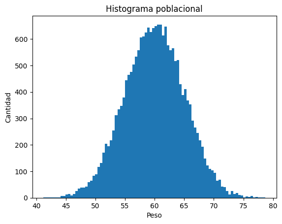
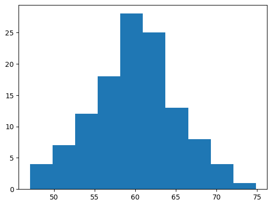

import numpy as np
import matplotlib.pyplot as pltEncabezado 1
Este es el primer encabezado.
Negritas y cursivas:
negritas, negritas
cursivas, cursivas
Links:
El repositorio del curso se encuentra aquí.
Matemáticas (ecuaciones):
Ecuaciones en línea: \(f(x) = x^2\)
Eucaciones centradas:
\[ f(x) = x^2 \]
Sumatorias:
\[ \sum_{i=1}^n x_i \]
\[ \int_a^b x dx \]
Tablas:
| a | b | c |
|---|---|---|
| 2 | 3 | 4 |
| 2 | 3 | 4 |
| 2 | 3 | 4 |
| 2 | 3 | 4 |
Concepto de población y de muestra
- Una población es el conjunto de todos los elementos medibles.
- Una muestra es un subconjunto de la población.
# simular una distribución normal con media de 60 y desviación estándar de 5
n = 20000
media = 60
sd = 5
pesos = np.random.normal(media, sd, n)
len(pesos)20000Ahora graficamos un histograma de los pesos.
plt.hist(pesos, bins=90);
plt.xlabel("Peso")
plt.ylabel("Cantidad")
plt.title("Histograma poblacional")Text(0.5, 1.0, 'Histograma poblacional')
Obtener una muestra de ‘pesos’ con una n de 120.
n_sample = 120
pesos_sample = np.random.choice(pesos, n_sample, replace=False)
len(pesos_sample)120plt.hist(pesos_sample);
Obtener.
- Media.
- Desviación estándar.
media_pob = np.mean(pesos).round(3)
media_muest = np.mean(pesos_sample).round(3)
sd_pob = np.std(pesos).round(3)
sd_muest = np.std(pesos_sample).round(3)
print(f'''Media poblacional: {media_pob}\n
Media muestral: {media_muest}\n
Desviación estándar poblacional: {sd_pob}\n
Desviación estándar muestral: {sd_muest}''')Media poblacional: 59.969
Media muestral: 59.942
Desviación estándar poblacional: 5.026
Desviación estándar muestral: 5.413